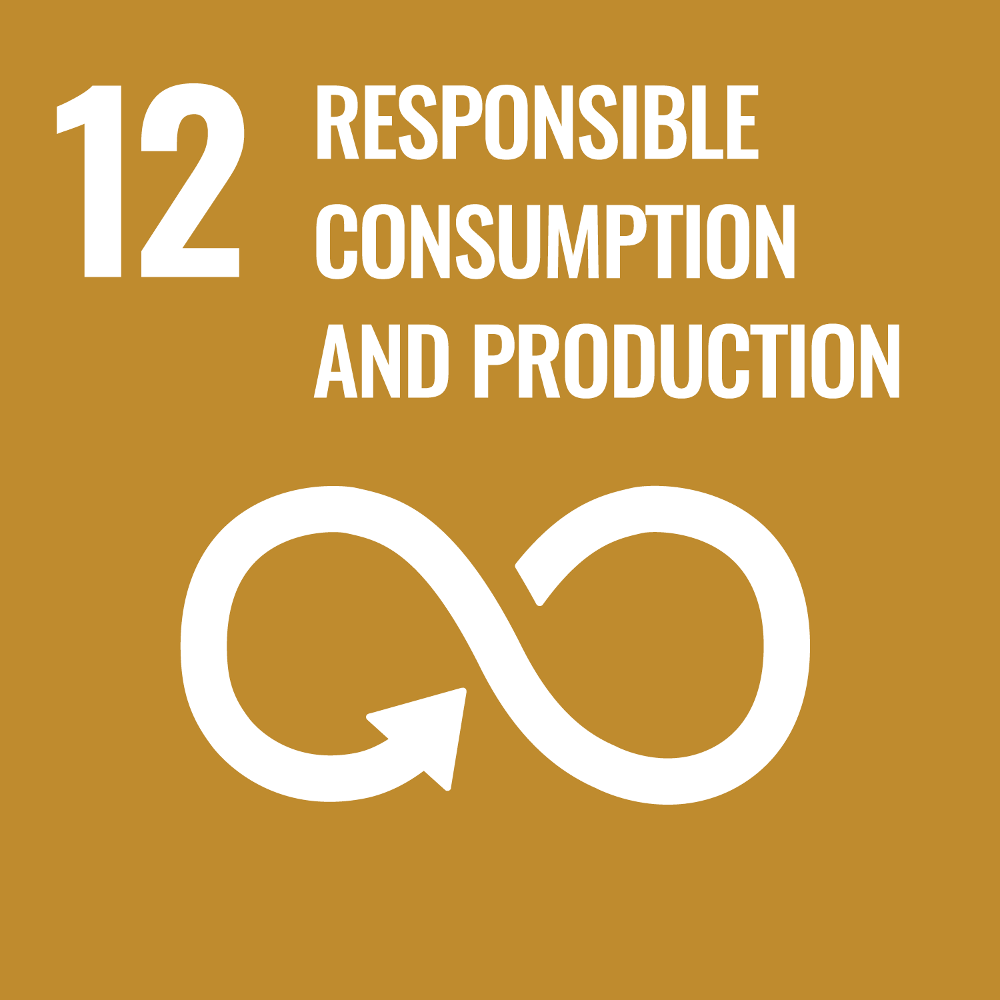
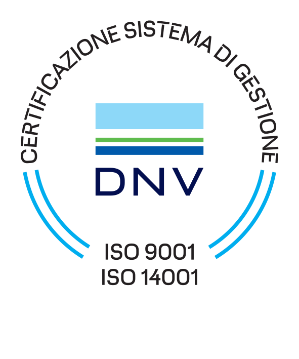
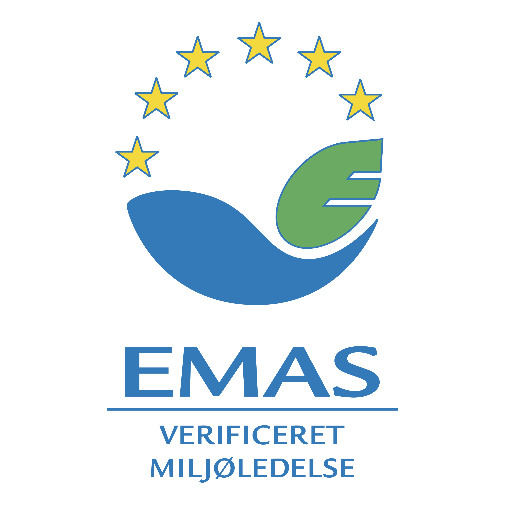
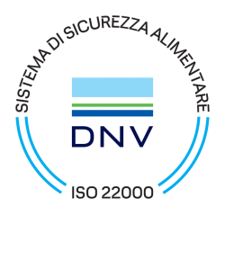
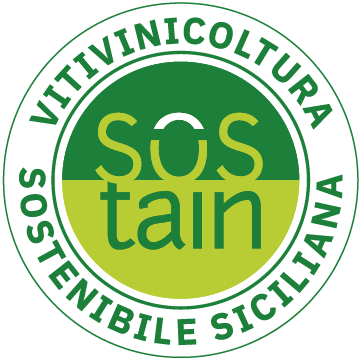
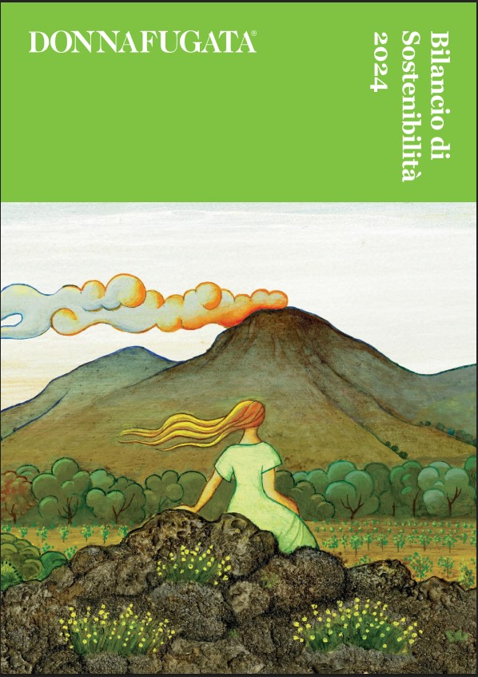
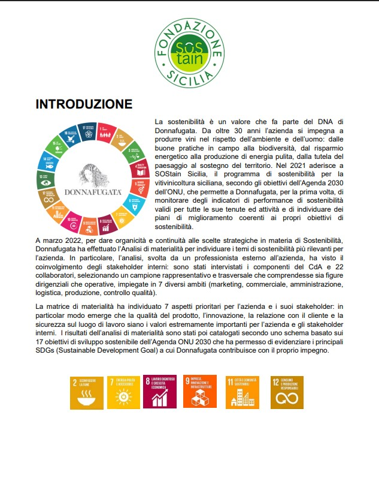

I nostri 9 SDGs
I SDGs — (Sustainable Development Goals) ovvero Obiettivi di Sviluppo Sostenibile — sono i 17 traguardi globali definiti dalle Nazioni Unite nell'Agenda 2030: una roadmap condivisa da 193 Paesi per costruire un futuro più equo, sano e rispettoso del pianeta entro il 2030.
A partire dalla prima analisi di materialità del 2022, Donnafugata ha identificato9 di questi 17 obiettivi come prioritari per la propria strategia, scegliendo quelli più coerenti con il proprio impatto su ambiente, persone e territorio siciliano. Il Bilancio di Sostenibilità 2024 — redatto secondo le linee guida GRI e allineato alla Direttiva UE CSRD — ne rendiconta i risultati con trasparenza e rigore.
 SDG 2 · Fame zero e agricoltura sostenibile
SDG 2 · Fame zero e agricoltura sostenibile SDG 5 · Parità di genere
SDG 5 · Parità di genere SDG 7 · Energia pulita e accessibile
SDG 7 · Energia pulita e accessibile SDG 8 · Lavoro dignitoso e crescita
SDG 8 · Lavoro dignitoso e crescita SDG 9 · Imprese, innovazione, infrastruttura
SDG 9 · Imprese, innovazione, infrastruttura SDG 11 · Città e comunità sostenibili
SDG 11 · Città e comunità sostenibili
SDG 12 · Consumo e produzione responsabili SDG 13 · Lotta contro il cambiamento climatico
SDG 13 · Lotta contro il cambiamento climatico SDG 14 · Vita sott'acqua
SDG 14 · Vita sott'acquaPratiche agronomiche sostenibili
Donnafugata non utilizza diserbanti chimici da oltre dieci anni. La gestione delle erbe infestanti avviene esclusivamente con mezzi meccanici e manuali, integrando dove necessario un disseccante naturale ricavato dagli scarti del cardo (acido pelargonico), che preserva fertilità e biodiversità del suolo.
Tra le pratiche adottate: sovescio con leguminose, concimazione organica, lavorazione minimum tillage, irrigazione di soccorso a goccia (deficit idrico controllato) e utilizzo di trappole a feromoni per il controllo dei parassiti. Nei nuovi impianti si utilizzano esclusivamente materiali ecocompatibili: pali in legno, tutori in bambù e materiali biodegradabili al posto dei tubetti in plastica.
A Contessa Entellina, Donnafugata gestisce un campo sperimentale con 19 varietà autoctone, tra cui la preziosa varietà reliquia Nocera. A Pantelleria, nel 2010 sono stati impiantati 33 biotipi di Zibibbo provenienti da diverse aree del Mediterraneo per sviluppare cloni resistenti alle condizioni estreme dell'isola.
Biodiversità e aree naturali
- ~67 ettari di aree naturali gestite (≈10% della superficie aziendale)
- 3 cantine in aree protette: Parco dell'Etna e Parco Nazionale di Pantelleria
- Alberello pantesco UNESCO: viticoltura senza irrigazione artificiale
- Muretti a secco in pietra lavica, Patrimonio UNESCO, per 40 km a Pantelleria
- Prati fioriti e piante mellifere per sostenere gli insetti impollinatori
- Recupero vigne centenarie a Pantelleria dal 1998; "vigna perpetua" sull'Etna
Energia rinnovabile ed efficienza
Dal 2001 Donnafugata produce energia pulita con impianti fotovoltaici. Nel 2024 la capacità installata supera i 300 kW totali, con il nuovo impianto da 218,88 kWp installato a Marsala nell'ambito del programma triennale 2023–2026 "Rigenerazione vitivinicola verso l'innovazione e la sostenibilità" (investimenti per 25 milioni di euro).
Nel 2024, il 95% dell'energia elettrica acquistata proviene da fonti rinnovabili certificate. L'intensità energetica — 0,50 kWh/litro di vino lavorato — è inferiore al limite di 0,70 kWh/litro previsto dal disciplinare SOStain.
Gestione responsabile dell'acqua
Operando in Sicilia, regione caratterizzata da clima caldo e spesso arido, Donnafugata adotta micro-irrigazione a goccia, selezione di vitigni autoctoni resistenti alla siccità e inerbimento per preservare l'umidità del suolo. A Pantelleria, l'alberello pantesco (UNESCO) consente la coltivazione senza irrigazione artificiale. Le cantine di Marsala, Contessa Entellina e Pantelleria dispongono di depuratori in loco per il trattamento delle acque reflue.
Dati idrici 2024
- Prelievo totale: 208,047 Ml (87% da acque superficiali)
- Scarico totale: 9,631 Ml
- Consumo netto: 198,416 Ml
- Monitoraggio tramite indicatore ACQUA della certificazione VIVA
Economia circolare e packaging
Donnafugata è la prima azienda al mondo ad aver adottato il tappo Nomacorc Ocean, prodotto riciclando plastica raccolta nelle zone costiere a rischio di inquinamento oceanico. Il primo vino confezionato con questa chiusura è stato il Damarino 2022. Nel 2024 il tappo viene esteso a un numero crescente di referenze.
In collaborazione con O-I Glass e SOStain Sicilia, Donnafugata ha sviluppato la bottiglia 100% Sicilia: prevalentemente ottenuta da vetro riciclato raccolto in Sicilia e prodotta localmente nello stabilimento di Marsala. Nel 2024, il 59% delle bottiglie da 750ml imbottigliate è leggero. Tutti i cartoni per il packaging secondario sono certificati FSC. La tracciabilità dei rifiuti è garantita tramite il portale Prometeo Rifiuti.
Rifiuti 2024
- Rifiuti totali prodotti: 863,13 ton
- Rifiuti non pericolosi: 860,91 ton
- Rifiuti pericolosi: 2,22 ton
- 99% dei rifiuti destinati al riciclo
- 81% dei rifiuti smaltiti trattato con recupero energetico
- Bottiglie leggere (750ml): 59% del totale
- Riduzione peso bottiglie mercati esteri (USA/Canada): –25%
Le nostre persone
Sin dalla sua fondazione, con Gabriella Anca Rallo in prima linea, Donnafugata è un'azienda a forte vocazione inclusiva. Nel 2024 le donne ricoprono il 40% dei ruoli di leadership (dirigenti e quadri) — dato superiore alla media del comparto agricolo — e il 50% delle posizioni dirigenziali. Nel corso dell'anno non sono stati segnalati episodi di discriminazione.
La formazione continua è un pilastro della cultura aziendale: nel 2024 sono state erogate 2.884 ore totali di formazione, con una media di 15 ore/anno per gli uomini e 13 per le donne. Il tasso di turnover è del 3%, segno di un ambiente di lavoro stabile e motivante.
Certificazioni e adesioni
Donnafugata ha avviato il proprio percorso di certificazione nell'anno 2000 con la ISO 9001. Oggi detiene uno dei sistemi di gestione integrati più completi del settore vitivinicolo italiano, con certificazioni che coprono qualità, ambiente, energia, sicurezza alimentare e sostenibilità vitivinicola.




Principali certificazioni
- ISO 9001:2015 — Sistemi di Gestione per la Qualità (dal 2000)
- ISO 14001:2015 — Sistemi di Gestione Ambientale (dal 2004)
- EMAS — Eco-Management and Audit Scheme, tutti i siti (dal 2006)
- ISO 22000 — Sicurezza Alimentare: Marsala, Contessa, Pantelleria (dal 2011)
- ISO 50001:2018 — Sistemi di Gestione dell'Energia: Marsala (dal 2018)
- SOStain Sicilia — 10 requisiti di sostenibilità vitivinicola (dal 2021)
- VIVA — Indicatori Aria, Acqua, Vigneto, Territorio (dal 2021)
- SQNPI — Produzione Integrata uve e olive (dal 2022)
Il percorso di sostenibilità
Zero diserbanti chimici
Dall'espansione a Pantelleria, Donnafugata adotta pratiche agricole a basso impatto: nessun diserbante chimico, gestione integrata dei parassiti, sovescio e concimazione organica.
ISO 9001 e avvio delle certificazioni
Primo passo nel percorso di certificazione qualità. Negli anni seguenti si aggiungono ISO 14001 (2004) ed EMAS (2006), con dichiarazione ambientale pubblica per tutti i siti produttivi.
Primo impianto fotovoltaico
Installato il primo impianto per la produzione di energia solare a Contessa Entellina. Oggi la capacità installata supera i 300 kW, con un nuovo impianto da 218,88 kWp a Marsala nel 2024.
ISO 50001 — Gestione dell'Energia
Il sito di Marsala ottiene la certificazione ISO 50001, con investimenti in macchine ad alta efficienza e un sistema avanzato di monitoraggio energetico.
SOStain e VIVA
Adesione alla Fondazione SOStain Sicilia e certificazione VIVA (Ministero della Transizione Ecologica), con misurazione sistematica degli indicatori Aria, Acqua, Vigneto e Territorio.
Prima analisi di materialità e SQNPI
Prima analisi di materialità strutturata secondo i framework ESG, con identificazione dei 9 SDGs prioritari. Ottenuta la certificazione SQNPI per la produzione integrata delle uve.
Tappo Nomacorc Ocean e bottiglia 100% Sicilia
Prima azienda al mondo ad adottare il tappo Nomacorc Ocean in plastica riciclata da zone costiere. Lancio della bottiglia 100% Sicilia in vetro riciclato raccolto e prodotto localmente a Marsala.
Primo Bilancio di Sostenibilità GRI
Pubblicazione del primo Bilancio di Sostenibilità redatto secondo le linee guida GRI e allineato alla Direttiva UE CSRD, con doppia analisi di materialità validata dal top management.
I nostri Report
La trasparenza è uno strumento fondamentale di miglioramento continuo. Donnafugata pubblica i propri risultati di sostenibilità ogni anno, evolvendo progressivamente i propri standard di rendicontazione.

Bilancio di Sostenibilità 2024
Primo bilancio redatto secondo le linee guida internazionali GRI e allineato alla Direttiva UE CSRD. Include doppia analisi di materialità, rendicontazione completa dei 10 temi materiali ESG e dati su emissioni, energia, acqua, rifiuti e persone.
Scarica il report
Report di Sostenibilità SOStain 2023
Rendicontazione secondo il disciplinare SOStain Sicilia (10 requisiti) e gli indicatori VIVA (Aria, Acqua, Vigneto, Territorio). Include l'analisi di materialità e i principali SDGs a cui Donnafugata contribuisce.
Scarica il report